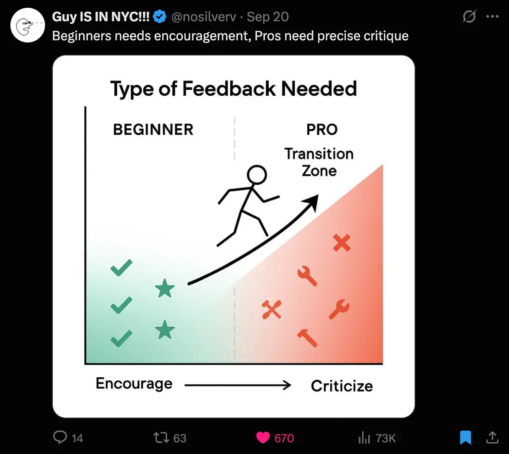
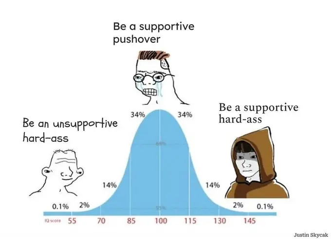
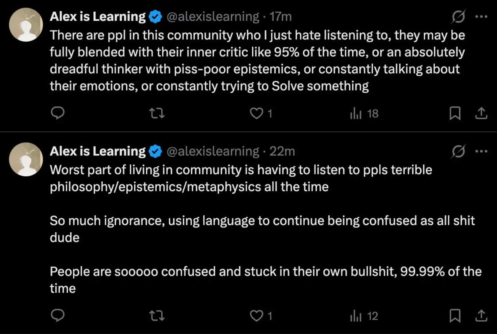

- Log per day - 2026
- 2026-03-23
- Again, using an astrology concept, so here’s my disclaimer: I’ve gotten into astrology, 2026-03-19 (disclaimer)
Context
- I’m 29.5 right now, meaning that it’s the time of my Saturn return
- My understanding is that:
- Saturn is the planet of discipline. “The Great Disciplinarian”.
- As opposed to Jupiter, who is the planet of optimism and expansion.
- Jupiter is the archetypal energy that gives you the motivation and optimism to build a skyscraper, and Saturn is the archetypal energy that diligently checks that your blueprints are correct
- Ooh, they map nicely to “encourage” vs “criticise” from this tweet that I really like (from On feedback)

- Also this

- Saturn is a supportive hard-ass, basically. And will criticise your plans for the skyscraper, rather than Jupiter’s “hell yeah, do it!!!”
- I feel like I’m often in Saturn mode in conversations with people at the EA Hotel. I see a lot of people in Jupiter mode, and see how faulty their logic is, and push back a lot. I am considered very disagreeable, but someone has to do it 😅 it really feels like I’ve lived from the naive, super optimistic Jupiter mode for so long that I am now really in the cold-water-to-the-face Saturn mode. Maybe that’s a part of the Saturn return too, becoming more Saturn-infused!
Claude
In astrology, Saturn is considered the planet of discipline, responsibility, and life lessons.
The core idea is that Saturn represents the “taskmaster” energy — wherever it shows up in your chart, that’s where life demands hard work, maturity, and perseverance. It’s associated with structure, limitations, time, karma, and long-term rewards that only come through effort.
Key themes include ambition and career, authority figures (bosses, fathers), rules and boundaries, fear and self-doubt, and ultimately — mastery. Saturn tends to delay rather than deny: things in its domain come slowly but tend to last.
The most talked-about Saturn event is the Saturn Return, which happens around ages 27–30, 58–60, and 88–90 — when Saturn completes its orbit and returns to where it was when you were born. It’s seen as a major life checkpoint that forces you to grow up, reassess your path, and take accountability.
In short: Saturn is the tough-love planet. It’s not flashy or fun, but it’s the one that supposedly shapes your character and builds your most lasting achievements.
1. What my Saturn Return could be about
- If I think about discipline, responsibility, and life lessons, then a few things are particularly alive right now
the below is a kind of “ridiculousness audit”, which is an idea I came up with like a year ago. “If someone more advanced than me (say, a CEO) could see how I live my life for a week, what would they consider ridiculous?” (back then, it would’ve been my social media use (twitter, youtube, reddit), at least, that would’ve been the obvious first thing to fix (and I have now fixed it, and can’t imagine ever going back!))
Overwhelm and overcommitment
- I’ve just spent the weekend wrangling my open loops, moving friends from whatsapp etc to email, plotting out my active projects, etc
- A key benefit is the ability to say “no, I’m at capacity”, rather than “sure, I have nothing but time!“. This will be seriously an enormously compounding win if I keep it up. All I need to do is create a weekly gantt chart that makes it clear how much stuff I have on my plate right now
- (It’s like, I was overwhelmed, not getting stuff done, over capacity + weighed down by aversive open loops, but hadn’t foregrounded this truth, instead thinking that I was time rich)
- Now I have a list of x projects, and I know that when stuff comes up (e.g., living in community, you’re invited to stuff all the time), I can say “no, I’m at capacity” (if the thing isn’t alive). And I’m actually at capacity nearly all the time, because I’m always working on stuff that I’m really excited about! Very Enneagram 3
Money
- An obvious one → I’ve chosen to live off my savings and be on sabbatical, and it has been amazing. But now, money is a blocker on doing stuff that I want to do, so, time to get monthly income 😎
Daily judgementalness
- Especially living in community, it’s very clear how much I dearly love some people and feel neutral or actually negatively towards most other people
- This doesn’t feel super alive (chanda) to fix right now, but it feels like it’s becoming more of a problem, plausibly. If I think about dating someone who I really want to date, and then think about how I’m acting in ways that she wouldn’t endorse, this is a key one, which feels very clarifying
- (It also feels downstream of real stuff. I feel negative towards men who I see as bullshitting themselves, not living up to their potential, etc. It feels very Saturnian, actually, although more “unskilfully negative” then like, “supportive hard-ass”)
Poor thinking
- This is a key one too - the amount that I’ve pivoted from thing to thing, following chanda (good!) but with poor epistemics/clarity etc
- I’ve already explored this a bunch on this website because it’s very this-website-shaped. Whereas e.g. money and daily judgementalness and overwhelm/overcommitment are more backgrounded, not-being-actively-worked-on things (or at least, they have been up until now! Let’s see what happens)
Tanha friendships
- I have friends who I think are holding me back (in certain ways), who live in a very Tanha way, who’s conversations are mostly tanha-fueled, are about trying to Improve Themselves or Figure Something Important Out, not realising that they’re engaging in bullshit thinking and obsessing over Makyo, who are fundamentally deluded in a haven’t-experienced-kensho-type way, who are full of thorns The two thorns analogy of Advaita Vedanta without realising, etc
- I can easily imagine that “discipline” could mean “be disciplined with who I talk to”. There’s the buddhist thing of “guarding the sense doors”. If I engage with people who are tanha-led, it reinforces my own tanha-based habits and thought patterns. I have friends who are chanda-led and yet I barely talk to them (I should talk to them far more!)
- I tweeted this yesterday, on this theme:

- There’s a cool guy I know, a very grounded venture capitalist with an awesome wife, and I see him as a great archetype here. He felt like a real adult-in-the-room at a retreat I was at, and it felt like he was very grounded and boundaried and doing his real adult shit (doing his VC work) and not engaging with us (“the kids”) that much. I want to do that much more!
Does astrology claim that my Saturn Return will be about something specific, based on my chart?
- I imagine so!
- I imagine that, according to my chart, Saturn was in a particular house when I was born, and during the return, it returns to that same house?
Claude
You’ve got the right idea! Here’s a fuller picture:
You’re correct that Saturn returns to its natal position — meaning the same degree of the same zodiac sign it was in when you were born, not just the same house. That’s actually the primary trigger.
What shapes the themes of your Saturn Return:
- The sign Saturn was in when you were born — this colours the flavour of the lessons. Saturn in Scorpio vs Saturn in Capricorn will feel very different.
- The house Saturn occupied — this points to the life area being tested (e.g. 7th house = relationships and commitment, 10th house = career and public life, 4th house = home and family).
- Aspects to other planets — if Saturn in your birth chart was in a tense angle to, say, your Moon or Venus, those themes get stirred up too.
A couple of things you might not have considered:
- Transiting aspects — during the return, astrologers also look at what other planets are doing at the same time, which can add extra layers.
- Your rising sign / whole chart context — Saturn rules certain signs (Capricorn and Aquarius traditionally), so if those feature heavily in your chart, Saturn’s influence is considered even stronger.
So yes — according to astrology, your Saturn Return isn’t generic. The sign + house + aspects combo supposedly makes it quite specific to you.
What Claude says, given my chart
I can see your natal Saturn is in Aries — it appears to be around 9° Aries in your 6th house.
Saturn takes about 29.5 years to orbit the Sun and return to the same sign and degree it occupied at your birth. Since Saturn entered Aries in early 2025 and will remain there through 2028, you’re either in or approaching your first Saturn return right now. The exact timing depends on when transiting Saturn hits that 9° Aries mark.
Here’s what stands out from the chart:
Saturn in the 6th House suggests your Saturn return will center on themes of daily routines, work, health, and service. The 6th house is about discipline in everyday life — how you structure your work habits, take care of your body, and handle responsibilities. Saturn returning here is likely to push you toward getting serious about these areas. If you’ve been neglecting your health or coasting in your job, this transit tends to force a reckoning.
Saturn in Aries adds a layer of learning around independence, assertiveness, and personal initiative. You may be confronting questions like: Are you taking charge of your own life, or waiting for others to lead? Are you being bold enough, or holding back out of fear?
The broader picture: With your Sun in Leo (10th house area), there’s a natural tension between your desire for recognition and creative self-expression and Saturn’s demand for humility, hard work, and structure in your daily grind. Your Saturn return may feel like a period where you have to earn your confidence through discipline rather than simply radiating it.
Saturn returns aren’t punishments — they’re more like a firm checkpoint. Whatever foundations you build now around work, health, and self-reliance will carry you through the next 29 years. It can feel heavy, but people often look back on their Saturn return as the period where they truly grew up.
Ok, this is great
- The tension I’m living in right now is the: how much Leo shiny nice-to-everyone energy should I be in, vs how much should I get my head down, value the people I value and ~drop1 the people I don’t value, get my shit together, be more disciplined with my days, say no to far more things, go much deeper on the few things I say yes to, etc
- It really does feel very discipline-coded. And like, I’m a few small turns away from a much richer life. It’s like, I have all the power tools I need, I have these big jumbo diesel-powered tools that I’ve been building for years, I just need to throw away the dumb little manual tools I’ve continued to play around with, and create a more rigourous schedule of what-power-tool-to-use-when to ensure they’re getting the most use-per-week
What the app “The Pattern” says, given my chart
Note that I trust this less than Claude Opus 4.6
Your Saturn return might be about learning to trust your own worth beyond just being responsible for others. With Saturn challenging your Venus and Mars, you could be facing deep questions about whether you’re truly receiving the love and emotional security you give so freely.
This period may push you to examine whether you’ve been settling for relationships where you feel undervalued or where your nurturing nature gets taken for granted. You might need to confront any patterns where you overextend yourself emotionally while struggling to ask for what you need in return.
The tension between your desire for stability and the disruptive forces in your life could come to a head now. You’re being asked to build structures that honor both your need for security and your right to have passionate, fulfilling connections.
There’s likely a reckoning happening around how you define strength - whether through self-sacrifice or through setting boundaries that protect your energy. This transit could reveal where you’ve been giving your power away in the name of being dependable.
You might find yourself reevaluating what true emotional responsibility looks like - not just taking care of others, but creating relationships where your depth and intensity are fully welcomed and reciprocated.
👆 ok, this is pretty amazing actually, feels very on point. Hell yeah 😎
Footnotes
-
Can’t find a word for this that doesn’t feel harsh! But I guess maybe it is harsh, and that’s ok ↩